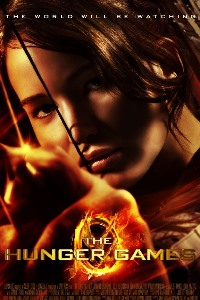

The Hunger Games
The Hunger Games (2012)
Katniss Everdeen voluntarily takes her younger sister's place in the Hunger Games, a televised competition in which two teenagers from each of the twelve Districts of Panem are chosen at random to fight to the death.
Katniss Everdeen voluntarily takes her younger sister's place in the Hunger Games, a televised competition in which two teenagers from each of the twelve Districts of Panem are chosen at random to fight to the death.
Catching Fire (2013)
Katniss Everdeen and Peeta Mellark become targets of the Capitol after their victory in the 74th Hunger Games sparks a rebellion in the Districts of Panem..
Katniss Everdeen and Peeta Mellark become targets of the Capitol after their victory in the 74th Hunger Games sparks a rebellion in the Districts of Panem..
Mockingjay - Part 1 (2014)
Katniss cries for 2 hours
Katniss cries for 2 hours
Mockingjay - Part 2 (2015)
As the war of Panem escalates to the destruction of other districts, Katniss Everdeen, the reluctant leader of the rebellion, must bring together an army against President Snow, while all she holds dear hangs in the balance.
As the war of Panem escalates to the destruction of other districts, Katniss Everdeen, the reluctant leader of the rebellion, must bring together an army against President Snow, while all she holds dear hangs in the balance.